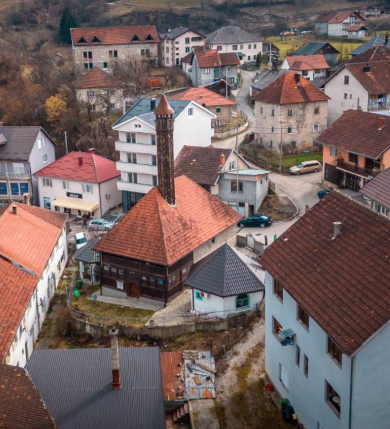

Redžepagića džamija, smještena u Plavu, predstavlja jedan od najvažnijih kulturnih i vjerskih spomenika Bošnjaka na tom području. Njena istorija je bogata i zanimljiva, jer je ova džamija bila svjedok mnogih istorijskih i društvenih promjena kroz vjekove. Kroz svoju dugovječnost, Redžepagića džamija je postala simbol duhovnog i kulturnog naslijeđa ovog regiona.
Pocetna Istorijski izvori kažu da je Redžepagića džamija izgrađena u drugoj polovini 18. vijeka, a najvjerovatnije je osnovana od strane porodice Redžepagić, jednog od uglednijih i bogatijih plemićkih porodica tog vremena. Džamija je, kao i mnoge druge u ovom regionu, izgrađena u tradiciji osmanske arhitekture, sa karakterističnim elementima, kao što su minaret, džamijski avlija (dvorište), kao i krov u obliku kupole. Redžepagića džamija je bila svjedok mnogih važnih istorijskih trenutaka i političkih previranja. Tokom raznih vladavina, uključujući osmansku i austrougarsku, džamija je imala ključnu ulogu u vjerskom životu zajednice. Nažalost, tokom Drugog svjetskog rata i u periodu nakon rata, kao i tokom rata 1990-ih, mnoge džamije na Balkanu, uključujući Redžepagića džamiju, pretrpjele su štete, ali je ona ipak bila obnovljena.
Danas, Redžepagića džamija nije samo vjerski objekat, već i kulturni centar. U njenoj blizini često se organizuju različite manifestacije, a džamija služi i kao centar za duhovni život i obrazovanje u zajednici. Zbog svoje istorijske i kulturne vrijednosti, ona je postala prepoznatljiv simbol Plava, a njena obnova i očuvanje omogućili su njen trajni značaj. Pored toga, džamija privlači turiste i istraživače koji dolaze da se upoznaju sa bogatom istorijom i kulturnim naslijeđem ovog kraja. Redžepagića džamija je i danas simbol kontinuiteta vjerskog života Bošnjaka u Plavu, a njena prisutnost na ovom području potvrđuje dugoročnu tradiciju islama i značaj ove vjerske zajednice za kulturni pejsaž Crne Gore.